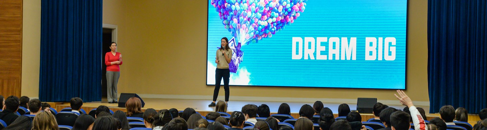

The Graduate School of Development (GSD) is the home for multidisciplinary research on Central Asia's social, economic, and cultural development. GSD is comprised of five entities, each of which has achieved a significant presence in the Central Asian knowledge landscape. They have forged regional networks of universities, researchers, and communities of practice and established international collaborations. With over 150 publications on its website available for free download, GSD is a singular storehouse of knowledge.
This multidisciplinary configuration means that GSD is well-positioned to address the challenges facing Central Asia by drawing on the natural and environmental sciences, the economic and social sciences, and on the humanities and cultural studies. It also means we are well-positioned for collaboration with other research institutes, here and abroad, as well as with the international donor community, think tanks, civil society and governments.
GSD’s work is concentrated around several key themes that capture the challenges facing the Central Asian region and that have a wider international relevance also:
Climate change – it’s effects and policies to mitigate them
Quality of life – through promoting equality, opportunity and prosperity
Community engagement – from civic participation to preserving cultural heritage
Sustainable Development – monitoring and impacting the SDGs for Central Asia